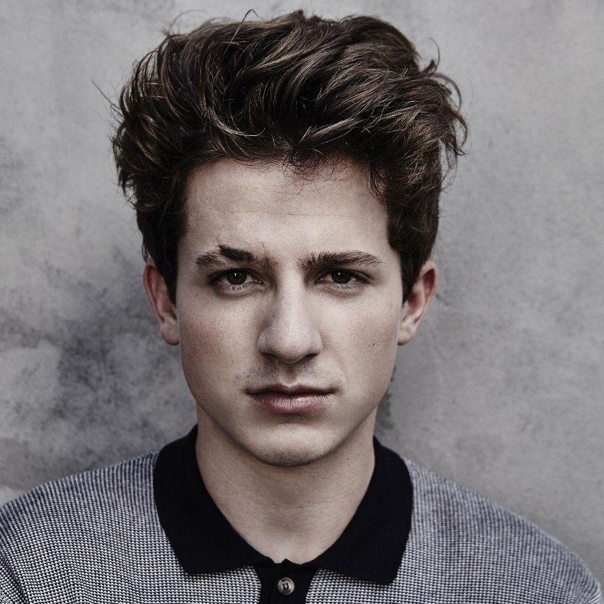

Justin Bieber
Justin Drew Bieber is a Canadian singer. He was
discovered by American record executive Scooter Braun and
signed with RBMG Records in 2008, gaining recognition with the release of his debut EP My World
(2009). It reached number six on the US Billboard 200, while its singles "One Time" and "One
Less Lonely Girl" peaked in the top twenty on the Billboard Hot 100.
Bieber's debut studio album, My World 2.0 (2010), debuted atop the Billboard 200, making him the
youngest solo male act to top the chart in 47 years. The album also contained the
internationally successful single "Baby", and established him as a teen idol. His second
album, Under the Mistletoe (2011), was the first Christmas album by a male artist to debut at
number one on the Billboard 200, while his third album, Believe (2012), saw experimentation
with dance-pop and mature themes. Following Believe, Bieber's public image went through a
drastic change through various controversies and legal issues during 2013 and 2014, leading
to Rolling Stone dubbing him "Bad Boy" on their March 2014 issue.


Selena Gomez
Selena Marie Gomez is an American
singer, actress, and producer.[1]
Born and raised in Texas, Gomez began her career by appearing on the children's television
series Barney & Friends (2002–2004). In her teens, she rose to prominence for her role as Alex
Russo in the Emmy Award–winning Disney Channel television series Wizards of Waverly Place
(2007–2012).
Gomez released three albums with her former band, Selena Gomez & the Scene: Kiss & Tell (2009),
A Year Without Rain (2010), and When the Sun Goes Down (2011), all of which peaked within the
top ten on the US Billboard 200 and attained gold certifications. Additionally, Gomez has
released three albums as a solo artist: Stars Dance (2013), Revival (2015), and Rare (2020), all
of which debuted atop the Billboard 200. She has scored eight top-ten singles on the
Billboard Hot 100: "Come & Get It", "The Heart Wants What It Wants", "Good for You", "Same Old
Love", "Hands to Myself", "We Don't Talk Anymore" with Charlie Puth, "It Ain't Me" with Kygo,
and "Lose You to Love Me", the latter being her first number-one single on the chart.
Charlie Puth
Charles Otto Puth Jr. is an American singer,
songwriter, and record producer. His initial exposure came through
the viral success of his song videos uploaded to YouTube.
After initially signing with eleveneleven after performing on The Ellen DeGeneres Show, Puth
began contributing to songs and albums for other artists such as Cody Simpson, Livingston
Taylor, and Skizzy Mars; as well as creating lite solo material and covers of popular songs.
With primary intent on a solo career, Atlantic Records and Artist Partner Group eventually
sought the artist and released his debut single, "Marvin Gaye" featuring Meghan Trainor in
2015. Coinciding with the single came his first feature, "See You Again", which he co-wrote,
co-produced, and performed with Wiz Khalifa for the Furious 7 soundtrack as a tribute to Paul
Walker. It peaked at number one on the US Billboard Hot 100 for 12 non-consecutive weeks. After
the success of "See You Again", he gained worldwide recognition for multiple subsequent
releases, including his next single "One Call Away". The single reached number 12 on the
Billboard Hot 100.
